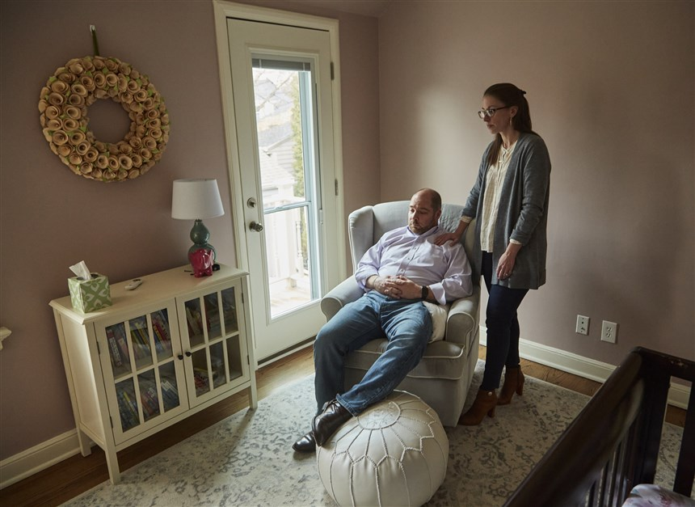

Nous proposons une traduction d'un article publié le 27 janvier 2020 sur NBC News, à propos d'un pédiatre urgentiste victime d'un faux diagnostic de maltraitance sur son bébé. Cette histoire est emblématique pour deux raisons. Elle montre d'abord qu'aucun parent n'est épargné par ce phénomène, même un médecin. Elle montre aussi des pratiques que nous constatons régulièrement dans les procédures : des falsifications des dossiers médicaux effectuées par certains médecins pour occulter des éléments médicaux qui auraient permis d'innocenter les parents (des éléments qui suggèrent une maladie rare, par exemple), conduisant à des poursuites biaisées et infondées. Au vu du caractère très grave des révélations de cet article, les autorités de l'État du Wisconsin ont tout fait pour empêcher sa parution, interdisant aux intervenants de témoigner et en menaçant le journaliste de poursuites. L'article a néanmoins été publié et il a eu un impact important sur les réseaux sociaux.
Un pédiatre urgentiste a été accusé d'avoir maltraité son bébé. Mais 15 experts médicaux disent qu'il n'y a aucune preuve.
Après qu'un médecin ait soupçonné qu'il ait fait du mal à son bébé, son propre hôpital a fait un signalement pour maltraitance. Mais aujourd'hui, ses confrères s'inquiètent d'un système « hors de contrôle ».
par Mike Hixenbaugh
le 27 janvier 2020
NBC News
MILWAUKEE - Dès le moment où il a entendu son bébé pleurer, le Dr John Cox a su qu'il avait blessé sa fille adoptive d'un mois. Un matin tôt de mai dernier, il s'était endormi involontairement aux côtés de sa fille dans son lit, dit-il, et il a dû sans doute se retourner sur elle dans son sommeil.
Cox, 39 ans, médecin aux urgences pédiatriques de l'hôpital pour enfants du Wisconsin, s'est assis et s'est mis a paniquer. Ses mains tremblaient lorsqu'il a examiné le bébé, dit-il, comme il craignait qu'il ne l'ait étouffée. Elle n'était pas en détresse respiratoire, mais il pouvait voir à la façon dont elle bougeait son bras gauche qu'il lui avait peut-être cassé la clavicule, une blessure courante chez les nourrissons qui guérit généralement toute seule sans soins spécifiques.
Cox a appelé sa femme, le Dr Sadie Dobrozsi, qui était en déplacement avec leurs deux enfants plus âgés, et il lui a expliqué en pleurant ce qu'il s'était passé. Dobrozsi, une oncologue pédiatrique du même hôpital, lui a dit de se calmer et lui a demandé de faire une conversation vidéo. Le bébé lui semblait aller bien, mais pour être tranquille, Dobrozsi a suggéré à Cox de l'emmener voir son pédiatre.
« C'est ce que feraient des parents normaux qui ne sont pas médecins », lui a-t-elle dit.
Selon plus de 15 experts médicaux qui ont ensuite examiné le cas de Cox, la suite a été une série d'erreurs médicales et de fausses déclarations de la part du personnel de l'hôpital qui a dévasté la famille de Cox et détruit sa carrière. Selon sept dermatologues qui ont examiné le dossier, une infirmière de l'équipe de l'hôpital chargée de la lutte contre la maltraitance a confondu les marques de naissance du bébé avec des ecchymoses. Puis, un pédiatre spécialisé en maltraitance a mal interprété un test sanguin crucial, selon quatre hématologues. Puis, deux semaines après l'incident, armés de ces rapports médicaux contestés, les services de protection de l'enfance ont enlevé l'enfant à ses parents.
« Avec le recul, » a déclaré Cox dans une récente interview, « l'emmener dans notre propre hôpital a été la pire décision que nous ayons prise pour notre bébé. »
Les responsables de l'hôpital ont refusé les demandes d'interview et n'ont pas souhaité répondre à nos questions écrites détaillées. Dans une déclaration commune avec le Medical College of Wisconsin, qui emploie des médecins exerçant à l'hôpital, les responsables ont déclaré qu'ils ne pouvaient pas commenter une affaire judiciaire en cours.
« La lutte contre la maltraitance est au cœur de la mission de l'hôpital consistant à s'occuper des enfants », selon la déclaration. « Nous prenons au sérieux notre responsabilité de protéger les enfants et d'agir en leur nom. »
L'histoire de Cox et Dobrozsi démontre le pouvoir démesuré accordé aux pédiatres spécialisés en maltraitance, appartenant à une sous-spécialité médicale en pleine expansion et qui travaillent en étroite collaboration avec les services sociaux. Leur travail a fait l'objet d'une enquête de NBC News et du Houston Chronicle. L'enquête a constaté que certains de ces médecins font parfois preuve d'excès de certitude dans leurs conclusions. Les organismes de protection de l'enfance et les magistrats se fondent souvent sur leurs rapports pour retirer des enfants et entamer des poursuites pénales, parfois en dépit des opinions contraires d'autres médecins spécialistes.
Plusieurs spécialistes de l'hôpital pour enfants du Wisconsin ont été parmi ceux qui ont examiné le dossier de Cox et qui ont rédigé des rapports concluant qu'il y avait peu de preuves de maltraitance, mais cela n'a pas convaincu les autorités du Wisconsin. Malgré le nombre imposant de rapports médicaux éloignant la possibilité de maltraitance, et des dizaines de lettres de soutien de confrères médecins qui décrivent Cox comme un père attentionné et doux, l'État a placé l'enfant en famille d'accueil quelques semaines après l'incident, et maintenant, huit mois plus tard - après qu'un autre pédiatre spécialisé en maltraitance engagé par l'État ait examiné le dossier et ait conclu à la maltraitance - un procureur a entamé des poursuites criminelles contre Cox.
S'il est reconnu coupable, il risque jusqu'à six ans de prison.
Matthew Torbenson, le procureur adjoint du comté de Milwaukee qui porte les accusations, a refusé de commenter, invoquant une ordonnance imposant le secret de l'instruction qu'il a lui-même émise, quelques heures seulement après qu'un journaliste de NBC News l'ait contacté pour demander une interview.
Des responsables des services sociaux du Wisconsin ont également refusé de commenter, citant une loi de l'État qui empêche l'agence de divulguer des détails sur les enquêtes relatives à la protection de l'enfance. Après avoir reçu des questions spécifiques sur l'affaire de NBC News vendredi, l'agence a envoyé une lettre de menaces à un journaliste l'avertissant de possibles poursuites pénales s'il publiait des informations contenues dans le dossier.
Cet article est basé sur des heures d'entretiens avec Cox et Dobrozsi, menés avant la délivrance de l'ordonnance imposant le secret d'instruction, ainsi que sur une étude des dossiers déposés dans le cadre de l'affaire pénale contre Cox devant la Cour de circuit du comté de Milwaukee.
Le Dr Eli Newberger, ancien professeur de la faculté de médecine de Harvard qui a mis en place le programme de lutte contre la maltraitance à l'hôpital pour enfants de Boston il y a 40 ans, fait partie des médecins qui ont examiné le dossier de Cox et qui ont identifié les erreurs commises par les spécialistes de la maltraitance de l'hôpital.
« Je suis abasourdi par ce dossier où tout a été fait à charge pour accuser le Dr Cox de maltraitance », dit Newberger.
L'histoire de Cox a également ouvert une brèche au Children's Wisconsin, où certains médecins se disent si inquiets de ce qu'il lui est arrivé qu'ils hésitent désormais à envoyer des petits patients pour une évaluation par des pédiatres spécialisés en maltraitance, de peur que l'un d'eux ne conclue trop rapidement à la maltraitance et fasse un signalement abusif.
Une douzaine de membres du personnel médical de l'hôpital ont parlé à un journaliste sous couvert d'anonymat, craignant des représailles s'ils parlent publiquement de leurs inquiétudes.
Plusieurs médecins urgentistes ont décrit une équipe de maltraitance « hors de contrôle », qui signalerait à tour des bras des lésions mineures et qui serait trop étroitement liée aux travailleurs sociaux. Trois des médecins se souviennent avoir subi des pressions de la part de pédiatres spécialisés en maltraitance des enfants pour falsifier des dossiers médicaux, en supprimant les passages où ils avaient initialement déclaré ne pas avoir d'inquiétudes au sujet de possibles maltraitances, bien qu'il n'y ait aucune preuve que cela se soit produit dans le cas de Cox.
« Ils nous ont essentiellement demandé de falsifier les dossiers médicaux pour aider l'État à poursuivre les parents », a déclaré un médecin. « C'est complètement inapproprié. »
Cinq médecins ont déclaré à un journaliste qu'ils avaient même peur d'emmener leurs propres enfants à l'hôpital après des blessures accidentelles, craignant qu'un mauvais diagnostic ou une mauvaise communication ne conduise les services de protection de l'enfance à briser leur famille.
« C'est une maladie dans notre hôpital », a déclaré un médecin. « La façon dont le cas de John a été mal traité nous a tous ouvert les yeux sur l'ampleur du problème. »
« Cela pourrait rapidement devenir incontrôlable »
Un mois avant l'incident, Cox et Dobrozsi s'étaient précipités à l'hôpital, impatients de rencontrer leur nouvelle petite fille.
Les parents biologiques de l'enfant les avaient choisis quelques semaines auparavant sur une liste de familles adoptives comme étant ceux qui élèveraient leur future fille. Cox et Dobrozsi avaient déjà adopté deux garçons, et ils étaient impatients de voir leur famille s'agrandir à nouveau.
« A partir du moment où nous nous sommes assis dans la pièce avec eux et qu'ils nous ont dit qu'ils nous avaient choisis, c'était notre fille pour toujours », a déclaré Dobrozsi, en comparant ce qu'elle a vécu avec ce que doivent ressentir les autres mères lorsqu'elles apprennent qu'elles sont enceintes. « Tout l'amour que vous avez pour votre enfant se manifeste à ce moment-là. »
Ils sont arrivés quelques minutes après la naissance du bébé, début avril, et ils ont passé la nuit avec elle. Ils étaient là pour son premier biberon, son premier changement de couche, son premier bain. Ils lui ont également donné un nom, mais NBC News ne le publie pas.
Le père de Dobrozsi a filmé le moment où ils ont ramené le bébé à la maison pour rencontrer ses frères. Aiden, qui a maintenant 5 ans, et Charlie - un enfant de 3 ans qui est né avec le spina-bifida et qui a besoin de soins médicaux quotidiens de la part de ses parents - ont sauté de joie et ont supplié de tenir leur nouvelle sœur dans leurs bras.
Ce premier mois passé ensemble, diront-ils chacun plus tard, a été le plus heureux de leur vie. « C'était comme si notre famille était complète », a déclaré Cox.
Dobrozsi n'avait pas du tout envie de devoir quitter la ville le 6 mai, un mois après son congé maternité, mais elle et ses parents avaient prévu un voyage à Washington depuis des mois. Ils emmenaient les garçons à un événement organisé par l'association nationale de spina-bifida, pour faire pression sur le Congrès afin d'améliorer le financement des soins de santé. Mme Dobrozsi a déclaré qu'elle ne craignait pas de laisser leur nouveau-né avec son mari, un pédiatre et un père expérimenté.
Le soir du 8 mai, un des amis de Cox est venu regarder le match des Milwaukee Bucks. Cox a tenu le bébé dans ses bras toute la nuit, se rappelle l'ami dans une interview, en se passionnant pour sa nouvelle fille. « C'était presque agaçant », a-t-il dit. « Du genre, bon John, tu peux la poser une minute pour qu'on puisse regarder le match ? On pouvait voir qu'il était vraiment heureux. »
Le bébé s'est réveillé dans son berceau vers 5 heures le lendemain matin, comme la plupart des jours, a déclaré Cox. Il a pris le bébé dans ses bras et l'a tenu dans son lit jusqu'à ce qu'elle se rendorme, a-t-il dit. Puis il a fait l'erreur de s'installer à côté d'elle.
« Nous étions côte à côte, enlacés », a dit Cox. Je me souviens très bien avoir pensé : "C'est bien. C'est la première fois que je vis ça avec ma fille. »
Cox dit qu'il s'est réveillé une heure plus tard, désorienté au son des pleurs du bébé. Son cœur s'est emballé lorsqu'il a réalisé que son corps s'était déplacé, a dit Cox, et qu'il était partiellement sur elle, son poids pressant les épaules du bébé l'une contre l'autre.
Au cabinet du Dr Al Pomeranz, plus tard dans la matinée, Cox a raconté la même séquence d'événements qu'il avait décrite à sa femme au téléphone ce matin-là, et il a fait part de son inquiétude quant à la fracture de sa clavicule. Le bébé semblait bouger les deux bras normalement à ce moment-là, a noté Al Pomeranz dans son dossier médical, et les premières radiographies sont revenues négatives pour des signes de blessure à la clavicule. Mais en examinant la fille, Pomeranz a repéré deux petites marques à l'intérieur de ses bras, et une autre au milieu de son dos, selon les dossiers.
Cox ne les avait pas remarquées avant, dit-il. Les marques sur ses bras pourraient provenir du moment où il a pris le bébé brutalement dans ses bras ce matin-là, alors qu'il pensait d'abord l'avoir étouffée, a dit Cox au médecin, mais il ne pouvait pas en être sûr.
Pomeranz, qui avait aidé à former Cox et Dobrozsi lorsqu'ils étaient internes en médecine, était face à un dilemne, se souvient Cox. Plus tard, dans une lettre, il décrivait ce qui suivit comme la décision la plus difficile de ses 38 ans de médecine.
Dans le Wisconsin, comme dans tous les États, les médecins sont légalement tenus de signaler aux autorités les cas où ils craignent qu'un enfant ait été maltraité. Pomeranz a dit à Cox et plus tard à Dobrozsi qu'il n'avait pas cette inquiétude, mais qu'il voulait s'assurer qu'il faisait ce qu'il fallait, en les traitant de la même manière que n'importe qui d'autre. Il a donc contacté les spécialistes de maltraitance de l'hôpital - connus sous le nom d'équipe de protection infantile du Children's Wisconsin - pour les alerter de la situation.
Cox a essayé de rester calme pendant que Pomeranz expliquait son raisonnement. En tant que médecin urgentiste, Cox savait qu'il était important de signaler les blessures suspectes. Pendant sa formation, il avait travaillé sur un projet de recherche visant à améliorer la détection précoce de la maltraitance au service d'urgences pédiatriques. Mais au fil des ans, il s'était également senti mal à l'aise face à ce qu'il décrivait comme une approche agressive de la part de ses confrères spécialisés en maltraitance chaque fois qu'un enfant arrivait avec des blessures difficiles à expliquer, surtout des ecchymoses.
« Je savais au fond de moi que cela pouvait devenir incontrôlable à tout moment », a déclaré Cox. « Mais je ne pensais pas que cela pourrait aller aussi loin. »
Plus tard dans la journée, un pédiatre spécialisé en maltraitance, le Dr Hillary Petska, a examiné le bébé et a également noté trois petits bleus, selon les dossiers médicaux. Dobrozsi était déjà de retour à Milwaukee et se trouvait dans la chambre pendant que Petska examinait le bébé. Dans le cadre du bilan standard de maltraitance, Petska a demandé une série de tests supplémentaires, y compris des radiographies du corps entier et des analyses de laboratoire pour dépister les troubles de la coagulation qui pourraient entraîner facilement des ecchymoses.
Le bébé a crié lorsqu'un membre du personnel de l'hôpital lui a piqué le bas du pied et l'a serré pour lui prélever un échantillon de sang cet après-midi-là, se souvient M. Dobrozsi. Finalement, Dobrozsi a été autorisé à la ramener chez elle.
Cette nuit-là, après que Cox et Dobrozsi aient mis les enfants au lit, deux enquêteurs des services de protection infantile ont frappé à leur porte. Ils ont demandé à voir le bébé.
Cox ne s'attendait pas à ce que l'État intervienne si rapidement, leur a-t-il dit, étant donné que l'hôpital n'avait même pas terminé son évaluation. Dobrozsi a sorti le bébé du lit et l'a déshabillé. Les travailleurs sociaux ont examiné ses bras et son dos, à la recherche des ecchymoses signalées.
« Cox et Dobrozsi se sont souvenus qu'un des travailleurs leur avait dit avant de partir cette nuit-là, "ils sont très fatigués". »
Il faut rechercher les « blessures sentinelles »
Les petites ecchymoses pouvaient sembler insignifiantes, mais pour le Dr Lynn Sheets, elles sont parfois le signe de quelque chose de plus inquiétant. En tant que pédiatre spécialiste de maltraitance au Children's Wisconsin et directrice médicale de l'équipe de protection infantile, Sheets a été reconnue au niveau national pour son travail d'étude sur la façon dont des lésions apparemment insignifiantes peuvent précéder des maltraitances graves.
Sheets prêche le même message depuis des années : si les médecins peuvent mieux reconnaître les signes avant-coureurs de la maltraitance, ils pourront peut-être sauver des vies. Ses recherches de 2013 sur ces « blessures sentinelles » - un terme qu'elle a inventé et popularisé - ont révélé que près d'un tiers des enfants gravement maltraités avaient déjà subi des blessures mineures, comme des ecchymoses.
En 2019, ces recherches ont motivé une législation fédérale qui fait maintenant son chemin au Congrès. Le projet de loi prévoit de financer des examens médicaux exhaustifs, notamment des radiographies et des scanners du corps entier, sur les nourrissons qui se présentent à l'hôpital avec des ecchymoses et d'autres lésions courantes.
« Une des choses dont nous nous sommes rendu compte, c'est que si vous appelez cela un bleu, tout le monde a des bleus », a déclaré Sheets au Milwaukee Journal Sentinel l'année dernière, après la présentation du projet de loi. « Tout le monde pense que c'est une blessure mineure, y compris les médecins, y compris les services de protection de l'enfance. Nous devons donc changer la façon dont les gens pensent à ces blessures mineures chez les jeunes enfants. »
Mais certains médecins, avocats de la défense et défenseurs des droits parentaux ont critiqué l'effort visant à redéfinir les blessures mineures comme des signes de danger futur. Ils avertissent que cela ouvre la porte à des poursuites abusives contre des familles innocentes, en particulier les personnes de couleur, qui sont plus susceptibles d'être signalées comme suspects de maltraitance, et les parents d'enfants atteints de maladies rares qui les prédisposent aux contusions.
Lors d'entrevues, plusieurs médecins urgentistes du Children's Wisconsin ont dit qu'ils avaient vu de leurs propres yeux les conséquences involontaires de cette philosophie.
« Je suis d'accord que des enfants sont maltraités et que nous devons les protéger », a déclaré un médecin. « Mais il semble qu'il y ait un mépris total pour le mal fait à l'enfant et à la famille lorsqu'un bilan médical complet est effectué et que des accusations sont portées alors qu'il ne s'agissait pas de maltraitance. »
Plusieurs médecins du Children's Wisconsin ont déclaré qu'ils avaient des inquiétudes quant au travail des spécialistes en maltraitance avant l'histoire de Cox, mais après avoir pris connaissance de son cas, ils voient d'un œil différent de nombreuses pratiques douteuses de l'équipe.
Par exemple, plusieurs membres du personnel ont dit à un journaliste que les pédiatres de l'hôpital qui s'occupent des enfants maltraités examinent régulièrement les dossiers médicaux des enfants qui ont été admis aux urgences - même si aucun médecin ne leur a demandé leur avis - et qu'ils se prononcent ensuite sur la nécessité de faire appel aux services de protection infantile. Parfois, les spécialistes en maltraitance envoient des notes dans lesquelles ils attaquent les urgentistes pour ne pas avoir signalé les enfants, même si ces médecins ne pensaient pas que l'enfant avait été maltraité, selon plusieurs médecins.
Dans au moins trois cas, selon des interviews et deux séries de messages internes étudiés par un journaliste, certains pédiatres spécialisés en maltraitance sont allés jusqu'à demander aux médecins traitants de falsifier le dossier médical d'un enfant, en supprimant ou en modifiant des passages dans lesquels ils avaient initialement constaté qu'il n'y avait guère de risque de maltraitance.
Dans l’un de ces cas, Sheets a suggéré de falsifier un dossier médical parce qu'elle craignait que, sans une note signalant une préoccupation de maltraitance de la part du médecin initial, les services de protection de l'enfance cessent d'enquêter, selon les messages entre médecins.
Sheets n'a pas répondu à un courriel d'un journaliste, et les responsables de l'hôpital n'ont pas répondu à des questions écrites détaillées sur les préoccupations internes soulevées par des membres du personnel médical.
Diane Redleaf, une avocate spécialiste du droit de la famille dans l'Illinois qui a écrit un article sur l'éthique du témoignage des médecins experts dans les affaires de maltraitance d'enfants, a déclaré que la pratique consistant à falsifier les dossiers médicaux pour favoriser les enquêtes des services de protection infantile est « contraire à l'éthique » et « choquante ».
« Les médecins ne sont pas censés défendre un résultat, en particulier un résultat juridique ; les médecins sont censés fournir des informations médicales », a déclaré Mme Redleaf.
Keith Findley, professeur à la faculté de droit de l'université du Wisconsin qui a cofondé le Wisconsin Innocence Project, a déclaré que lorsque les médecins travaillent de concert pour façonner le message envoyé aux enquêteurs, « cela compromet l'accès du système juridique à la vérité ».
« Ce qu'ils font en réalité, c'est de façonner le dossier d'accusation pour finir par occulter délibérément au système judiciaire des opinions différentes qui pourraient être utiles aux enquêteurs afin de déterminer ce qui s'est réellement passé », a déclaré M. Findley. « C'est profondément problématique. »
Sheets et son équipe ont façonné plus que les pratiques hospitalières ; sa vigilance à l'égard de blessures apparemment mineures a également imprégné les systèmes de protection de l'enfance et de justice pénale à Milwaukee.
Après que les agents des services de protection de l'enfance aient rendu visite à Cox et Dobrozsi à leur domicile, l'une d'entre elles a noté dans son rapport écrit que les ecchymoses du bébé étaient « très petites » et « sans importance », selon une motion déposée par l'avocat de Cox devant la Cour de circuit du comté de Milwaukee, argumentant que l'État ne disposait pas de suffisamment de preuves pour porter des accusations. Mais, en raison d'une inquiétude concernant les « blessures sentinelles », Cox et Dobrozsi ont appris plus tard que les responsables des travailleurs sociaux ont déterminé que des mesures supplémentaires devaient être prises.
Le lendemain matin, Cox a reçu un appel d'une autre assistante sociale, Jessica Barber, qui lui a expliqué que les « supérieurs » des services de protection de l'enfance et de l'hôpital avaient décidé que le bébé devait immédiatement subir une évaluation supplémentaire avec un autre spécialiste en maltraitance, a déclaré Cox. Et cette fois, a-t-elle dit à Cox, ni lui ni sa femme ne pouvaient y assister. Cox était au travail et a transmis le message à sa femme.
Un porte-parole de l'agence a refusé la demande d'un journaliste d'interviewer les employés des services de protection de l'enfance qui travaillaient sur le cas de Cox.
Barber s'est présenté chez eux 20 minutes plus tard. Dobrozsi l'a suppliée : « Pourquoi je ne peux pas venir ? Je ne comprends pas ce qui se passe. »
Barber lui a dit que c'était la « procédure normale » pour les parents d'être empêchés de se rendre à des rendez-vous avec des spécialistes de la maltraitance, a rappelé M. Dobrozsi. Plus tard, elle a dit que Barber avait donné une explication différente : Ils n'étaient pas autorisés à y assister, car en tant que médecins, ils seraient en mesure de poser des questions techniques et difficiles et de contester l'évaluation.
En tant qu'oncologue pédiatrique, cela ne semblait pas normal pour Dobrozsi. L'une des étapes les plus importantes pour établir un diagnostic précis est de parler aux patients ou à leurs parents. Comment quelqu'un pourrait-il évaluer la crédibilité de l'histoire de Cox s'il ne se donnait pas la peine de l'entendre ?
Barber a demandé à Dobrozsi si elle avait son consentement pour prendre le bébé.
« On dirait que je n'ai pas le choix », se souvient Dobrozsi.
Elle a pleuré pendant que Barber chargeait la fille dans sa voiture et s'éloignait.
"Vous m'enlevez mon enfant ! »
Près de deux heures plus tard, Barber a appelé Dobrozsi et lui a dit qu'elle pouvait venir la rejoindre à l'hôpital. Alors qu'elle était assise avec l'assistante sociale cet après-midi-là, en attendant les résultats d'autres tests, un policier est entré dans la chambre et lui a expliqué que quelqu'un à l'hôpital avait signalé un bébé avec des blessures inexpliquées.
Dobrozsi a été stupéfaite. Elle dit s'être tournée vers Barber et a demandé à savoir ce qui s'était passé lors de l'examen médical ce matin-là.
Il s'est avéré qu'une infirmière praticienne de l'équipe de l'hôpital spécialisée en maltraitance, Rita Ventura, avait examiné le bébé et avait conclu que son corps était couvert de plus d'une demi-douzaine d'ecchymoses, y compris le long de l'arrière de ses bras.
« Ce sont des marques de naissance ! » a dit Dobrozsi à Barber. De plus, dit-elle, aucun des médecins qui avaient examiné le bébé un jour plus tôt n'avait remarqué d'autres contusions.
L'inspecteur James Donovan a passé des heures à interroger séparément Dobrozsi et Cox à l'hôpital ce vendredi après-midi, se souviennent-ils lors d'une interview. Il a également passé en revue les résultats médicaux et a examiné le bébé. Ensuite, il a demandé à parler en privé avec l'un des travailleurs sociaux des services de protection de l'enfance.
Donovan a dit à l'employée « qu'il n'était pas sûr de la raison de leur présence, car il n'a rien vu de criminel », a écrit l'employée dans ses notes, selon une requête déposée dans le cadre de l'affaire pénale.
Un porte-parole du département de police de Wauwatosa a refusé une demande d'interview de Donovan, en invoquant la politique du département de ne pas commenter les affaires criminelles en cours.
Malgré les réserves initiales de l'agent, Cox et Dobrozsi ont conclu un accord de sécurité avec les services de protection de l'enfance ce soir-là. Pendant que les travailleurs des services de protection de l'enfance et la police poursuivaient leurs enquêtes, les parents de Dobrozsi emménageaient avec eux et les supervisaient à tout moment lorsqu'ils étaient avec leurs enfants.
S'ils suivaient simplement les règles et continuaient à dire la vérité, se disaient Cox et Dobrozsi, tout irait bien.
Deux jours plus tard, à l'instigation de Pomeranz, leur pédiatre, ils ont emmené le bébé voir un dermatologue pédiatrique au Children's Wisconsin, le Dr Yvonne Chiu, pour un deuxième avis.
Chiu a examiné la jeune fille et a passé en revue les photos prises lors de la première visite du médecin chez Pomeranz le matin de l'incident. Chiu est une dermatologue experte dans la différenciation des ecchymoses des autres marques cutanées, a conclu que le bébé n'avait subi que les trois petites ecchymoses que Pomeranz avait remarquées au départ et qui s'étaient pour la plupart dissipées au cours du week-end. Les autres marques sur son corps étaient des taches de naissance ou d'autres lésions bénignes qui sont courantes chez les nouveau-nés, a écrit Chiu.
Chiu pensait que les deux bleus sur les bras pouvaient avoir été causés lorsque Cox avait pris le bébé dans ses bras quand il était paniqué. Et l'ecchymose sur le dos du bébé semblait correspondre à l'alliance de Cox et se situait à l'endroit où il lui tapotait normalement le dos pendant qu'il lui faisait faire son rot, selon le rapport de Chiu.
Comme Pomeranz, Chiu ne s'inquiétait pas que la fille ait été maltraitée. Elle a fait part de ses conclusions aux services de protection de l'enfance et à la police. Plus tard, six autres dermatologues ont examiné les dossiers médicaux et ont convenu que Ventura s'était trompée lorsqu'elle a signalé des « contusions étendues ».
Mais lorsque Cox et Dobrozsi ont par la suite déposé une plainte auprès des administrateurs de Children's Wisconsin au sujet de la découverte de Ventura, les chefs d'équipe de protection infantile ont répondu qu'ils étaient mieux équipés que les dermatologues dans ces domaines : « Différencier les blessures accidentelles des blessures infligées est le rôle des professionnels de la médecine de l'enfance et n'est généralement pas le rôle des dermatologues », ont-ils écrit.
Kate Judson, avocate à Madison et directrice exécutive du Center for Integrity in Forensic Sciences, a examiné le dossier à la demande de NBC News et a déclaré qu'il suivait un schéma familier qu'elle avait observé au fil des ans. Les spécialistes de la maltraitance, dit-elle, exagèrent parfois leur expertise tout en minimisant celle des autres spécialistes.
« Ce qui me frappe, c'est que vous avez ces conclusions hâtives qui n'ont aucun fondement », a déclaré Mme Judson. Vous avez donc ici une infirmière praticienne qui dit : "Eh bien, je peux déterminer avec précision et certitude que ce bleu a été infligé intentionnellement". Et puis vous avez un dermatologue, qui est sans aucun doute un expert dans l'examen des lésions cutanées, qui dit : "Eh bien, ce n'est même pas un bleu". »
Les autorités de Milwaukee ont cru Ventura sur parole.
Le 24 mai, deux semaines après le début de l'histoire, les travailleurs sociaux sont retournés au domicile de Cox et Dobrozsi. Ils étaient venus pour prendre le bébé, et cette fois ils ne le ramèneraient pas.
Cox et Dobrozsi ont dit qu'ils ont plaidé auprès de l'assistante sociale, Amy Scherbarth, la même qui, selon eux, des semaines plus tôt, avait décrit les blessures des bébés comme étant « insuffisantes ». Qu'en est-il du rapport du dermatologue ? Son opinion ne devrait-elle pas avoir plus de poids qu'une infirmière praticienne qui n'a jamais entendu le récit de Cox sur ce qui s'est passé ni parlé à quiconque ayant pu s’occuper du bébé ?
Pourquoi les parents de Dobrozsi ne pouvaient-ils pas continuer à les surveiller ? Qu'est-ce qui avait changé ?
Scherbarth a dit qu'elle comprenait le conflit sur la question de savoir si certaines des marques de naissance du bébé avaient été confondues avec des ecchymoses, s'est rappelé Dobrozsi, mais l'employée a dit que personne ne pouvait expliquer l'ecchymose sur le bas du pied du bébé.
« Quelle ecchymose ? » a demandé M. Dobrozsi. « Il n'y a jamais eu d'ecchymose sur son pied. »
« Vous me prenez mon enfant et vous ne pouvez répondre à aucune de mes questions », se souvient Dobrozsi.
Elle m'a regardé dans les yeux et m'a dit : « Vous n'êtes même pas sa mère. »
Les parents de Dobrozsi et Cox étaient tous présents et ont attesté de sa description de l'échange.
Par la suite, Dobrozsi a demandé à sa mère de mettre des couches et du lait maternisé dans un sac. Dobrozsi a attrapé la licorne en peluche du bébé et une sucette. Puis, elle et Cox se sont assis par terre avec elle et l'ont tenue à tour de rôle en sanglotant.
« Nous lui avons dit que nous l'aimions », a dit Dobrozsi, « et que nous ferions tout ce qui serait en notre pouvoir pendant le restant de nos jours pour essayer de la faire revenir à la maison. »
Quelques minutes plus tard, elle était partie.
Une série d'erreurs
Nuit après nuit, pendant des semaines, Dobrozsi se réveillait en panique, terrifiée à l'idée que ses enfants étaient en danger. Elle sortait du lit pour aller voir chacun des garçons, en plaçant sa main sur eux pendant leur sommeil.
Puis elle allait dans la chambre du bébé et se tenait au-dessus de son berceau vide, avant de se recroqueviller sur le sol de la nurserie et de pleurer pour s'endormir.
Comme l'adoption n'était pas encore finalisée, Cox et Dobrozsi ne bénéficiaient pas des mêmes droits légaux que les autres parents. Ils ne pouvaient pas rendre visite au bébé, et l'État ne leur permettait pas de rester avec les membres de sa famille.
Pendant la journée, entre leurs horaires de travail chargés et la prise en charge de leurs garçons, Cox et Dobrozsi ont tenté de lutter contre ces fausses accusations. Ils ont pris un avocat et ont commencé à étudier les dossiers médicaux.
Dobrozsi a dit qu'elle a rapidement identifié une série d'erreurs et d'inexactitudes commises par Ventura, l'infirmière praticienne qui avait signalé de nombreuses ecchymoses aux autorités, et Petska, la pédiatre spécialisé dans les mauvais traitements infligés aux enfants qui avait vu le bébé un jour plus tôt.
Ni Ventura ni Petska n'ont souhaité répondre à nos sollicitations.
Elles ont toutes deux décrit de manière inexacte le récit de Cox sur ce qui s'est passé - ce qui n'est pas surprenant, a déclaré M. Dobrozsi, étant donné qu'aucune des deux n'a jamais parlé avec lui en personne.
Elles ont également toutes les deux indiqué à tort que le bébé avait souffert d'une contusion au visage, déformant ainsi un récit fourni par Dobrozsi, qui à un moment donné a mentionné avoir remarqué une marque sur le visage de sa fille quelques semaines auparavant après qu’elle se soit endormie sur un attache-tétine mais qui n'était resté que quelques heures. Dobrozsi a dit qu'elle n'avait jamais décrit la marque antérieure comme un bleu, mais qu'elle l'avait mise en évidence comme preuve que la peau du bébé était sensible.
Et surtout, Petska et Ventura avaient tous deux rapporté à tort que les résultats des premiers tests de laboratoire du bébé étaient négatifs pour un trouble de la coagulation qui pouvait causer facilement des ecchymoses. Mme Dobrozsi, qui, en tant qu'hématologue oncologue pédiatrique, est experte dans l'évaluation des enfants pour les troubles de la coagulation, a été scandalisée lorsqu'elle a lu les résultats des tests.
Les laboratoires ont indiqué une durée allongée de coagulation, ce qui suggérait un possible trouble de la coagulation et aurait dû conduire à des tests plus approfondis, selon quatre hématologues, dont le directeur médical du Comprehensive Center for Bleeding Disorders du Children's Wisconsin, qui ont depuis examiné les dossiers.
Au lieu de cela, Petska a signalé aux autorités que les tests sanguins étaient normaux. Et Ventura a écrit : « Les résultats disponibles à l'heure actuelle n'indiquent aucune inquiétude quant à un trouble hémorragique cliniquement significatif. »
Cox et Dobrozsi ont communiqué les rapports d'hématologie des experts aux services de protection de l'enfance, au procureur du comté et aux administrateurs des hôpitaux, mais à leur connaissance, aucun test de suivi n'a jamais été effectué.
Le bébé a subi d'autres radiographies dans les semaines qui ont suivi l'intervention des services de protection de l'enfance, et l'une d'entre elles a semblé conforter le cas de Cox. Elle a montré une fracture de la clavicule en voie de guérison, confirmant non seulement l'inquiétude initiale qui a poussé Cox à emmener le bébé chez le médecin, mais aussi, selon quatre chirurgiens orthopédistes qui ont depuis examiné les dossiers médicaux, a validé le compte-rendu qu'il a donné aux autorités.
Mais les spécialistes de la maltraitance et les travailleurs sociaux ont vu les choses différemment, selon les documents déposés dans le cadre de l'affaire pénale. Ils ont conclu que la fracture de la clavicule était une preuve supplémentaire de maltraitance, ce qui semble contredire la littérature médicale sur le sujet. Selon de nombreuses études publiées, les fractures de la clavicule sont courantes chez les nourrissons et ne sont pas particulièrement préoccupantes pour des maltraitances.
« Honnêtement », a écrit le Dr Matthew Wichman, l'un des chirurgiens orthopédistes qui a examiné les dossiers médicaux, « tout cela semble tout à fait absurde. »
En réponse aux plaintes déposées l'année dernière par Cox et Dobrozsi concernant la manière dont l'hôpital a traité leur cas, le Dr Michael Gutzeit, médecin-chef du Children's Wisconsin, a défendu le travail des spécialistes en maltraitance de l'hôpital.
« Dans un situation qui évoluait rapidement, des efforts ont été faits pour protéger l'enfant, les personnes impliquées et les droits des personnes concernées », a déclaré le Dr Gutzeit dans la lettre du 1er août. « Je pense que toutes les personnes impliquées dans cette affaire ont essayé de fournir des soins compétents et compatissants, en se concentrant sur l'intérêt supérieur de l'enfant. »
L'erreur la plus troublante n'a été révélée qu'en novembre, cinq mois après que l'État ait pris le bébé. C'est alors que les services de protection de l'enfance ont finalement fourni à Cox et Dobrozsi les photos que Ventura avait prises lors de son examen, qui avaient inexplicablement été stockées en dehors du dossier médical de l'enfant et partagées uniquement avec les enquêteurs.
Dobrozsi et leur avocat ont fait défiler les images sur son ordinateur. Son cœur a bondi lorsqu'ils ont vu l'image du bas du pied du bébé.
L'assistante sociale avait raison ; il y avait une ecchymose sur le talon du bébé. Et dès que Dobrozsi l'a vu, elle a su immédiatement comment il était arrivé là.
Ventura a d'abord eu un pressentiment, en disant aux services de protection de l'enfance que l'ecchymose pouvait être le résultat de la piqûre au talon, selon une requête déposée par l'avocat de Cox dans son affaire pénale. Mais Ventura a déclaré que c'était une explication peu probable, car cela faisait un mois que le bébé avait subi une prise de sang pour son dépistage néonatal, selon la motion.
Si Dobrozsi avait été autorisée à assister au rendez-vous, elle aurait pu aider Ventura à résoudre le mystère. Elle était dans la chambre, un jour plus tôt, lorsqu'un employé de l'hôpital a piqué le pied du bébé pour prélever un échantillon de sang prescrit par Petska - la même prescription qui indiquait un possible trouble de la coagulation, mais que les médecins n'ont pas lu correctement.
Dobrozsi a pleuré, en colère contre elle-même pour ne pas avoir fait le rapprochement plus tôt.
La blessure qui a servi de raison principale pour lui avoir été son bébé n'avait pas été infligée par Cox dans le cadre de maltraitance, mais par le personnel hospitalier.
« Il faut que cela cesse »
À la mi-janvier, Cox a été informé que - malgré les avis médicaux extérieurs, malgré les erreurs répétées du personnel médical, malgré le fait que les enquêteurs n'aient jamais interrogé l'ami qui était avec lui quelques heures avant l'incident - le comté se préparait à déposer des accusations criminelles.
Cox a été incarcéré à la prison du comté jeudi puis libéré.

Torbenson, le procureur adjoint qui a porté plainte, avait reçu tous les rapports des experts médicaux externes, mais il ne les a pas considérés dans la plainte pénale.
Au lieu de cela, le procureur a pris note de l'étude réalisée en 2013 par Sheets sur les dangers de négliger les blessures sentinelles et a cité les conclusions de son équipe de lutte contre la maltraitance, notamment l'affirmation non fondée selon laquelle le bébé avait auparavant subi une contusion au visage que ses parents ne pouvaient pas expliquer.
« Le bleu précédent ainsi que les bleus documentés le 9 mai 2019 constituent de multiples blessures sentinelles », a écrit Torbenson.
Le procureur a également cité un rapport du Dr Nancy Harper, une pédiatre du Minnesota spécialisée en maltraitance, qui a été engagée par les services de protection de l'enfance pour examiner le dossier et qui a rendu ses conclusions avec une certitude absolue.
« En résumé, il n'y a aucune explication aux blessures du bébé autre que le traumatisme », a écrit le Dr Harper, selon la plainte pénale. « Cette constellation de lésions, comprenant un traumatisme cutané et une fracture de la clavicule, est un diagnostic clinique de maltraitance physique d'un enfant. »
Harper n'a pas répondu à un courriel demandant un commentaire.
Cox et Dobrozsi ont l'intention de se battre contre ces accusations et, à terme, ils veulent utiliser leur expérience pour défendre d'autres familles accusées de maltraitance sur la base de ce qu'ils estiment être de la pseudo-médecine.
« Ce qui s'est passé et continue de se passer n'est pas de la médecine », a écrit Dobrozsi à un journaliste, après avoir aidé Cox à nettoyer son bureau avant sa démission de l'hôpital. « C'est de l'ego, de l'arrogance et du pouvoir. Et il faut que cela cesse. »
Ils espèrent que leur histoire pourra un jour conduire à des changements pour que personne d'autre n'ait à endurer le même calvaire. Au moins, ils espèrent que les dirigeants du Children's Wisconsin écouteront les préoccupations des médecins urgentistes et ajouteront des garanties pour protéger les parents innocents.
Mais pour l'instant, ils se battent simplement pour expliquer la situation à leurs enfants. Charlie, le plus jeune, ne se souvient de sa sœur qu'à travers des photos et des histoires, mais Aiden est troublé par sa disparition.
« Est-ce que quelqu'un va venir me chercher aussi ? », demande-t-il parfois. À un moment donné, il avait rempli un sac à dos avec ses jouets préférés et l'avait rangé dans le placard - au cas où.
Incapables de répondre à sa question avec certitude et craignant que les services de protection de l'enfance ne reviennent encore pour leurs garçons, Cox et Dobrozsi lui ont plutôt fait la même promesse qu'ils ont faite à sa sœur.
Ils ne cesseraient jamais de se battre pour le ramener à la maison.